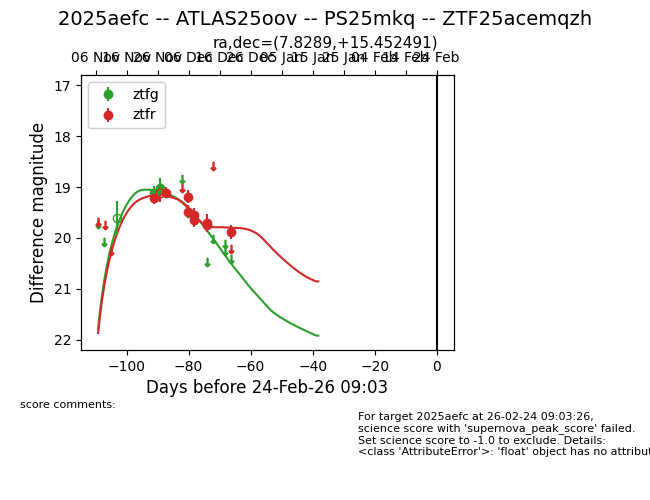
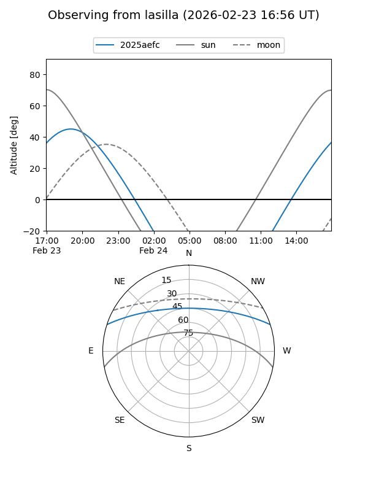
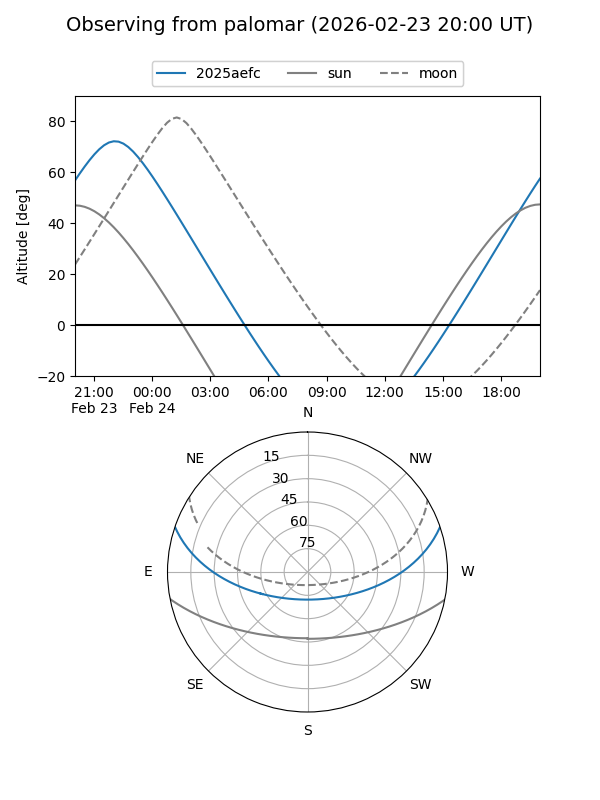
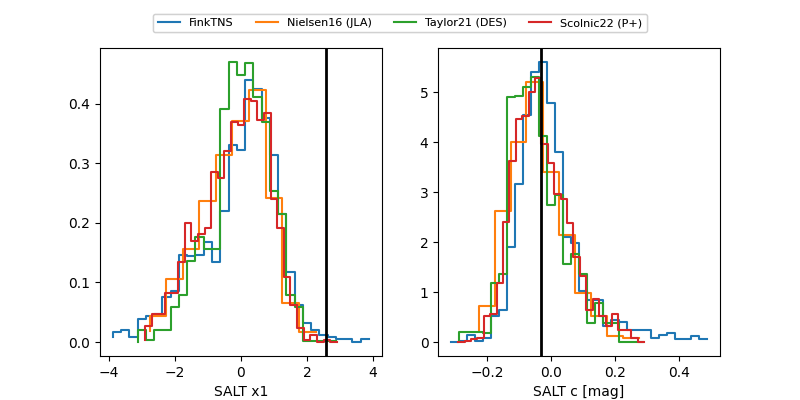

2025aefc
Target 2025aefc at 2025-12-31 18:00
Aliases and brokers:
FINK: link
Lasair: link
ALeRCE: link
TNS: link
YSE: link
alt names
ZTF25acemqzh (ztf,fink_ztf)
2025aefc (tns,yse)
ATLAS25oov (atlas)
Coordinates:
equatorial (ra, dec) = 7.8289,+15.45249
equatorial (HMS+DMS) = 00:31:18.93,+15:27:08.97
galactic (l, b) = (115.7943,-47.14019)
Flags:
Photometry:
last ztfg=19.01, ztfr=19.88
2 ztfg, 9 ztfr detections
Lightcurve

Visibility


Additional plots
